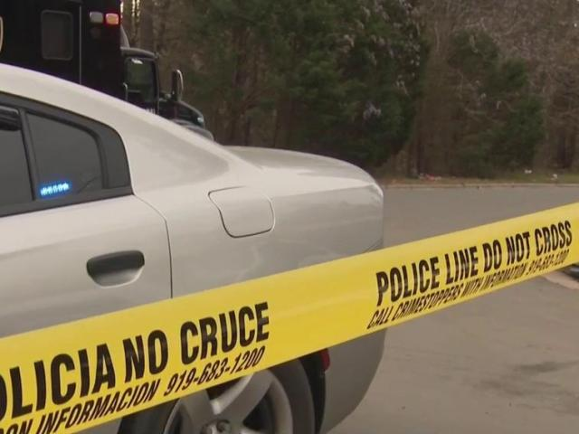

21 Minors Shot in Durham So Far in 2023: An Alarming Reality
Image Credits https://www.wral.com/21-minors-shot-in-durham-so-far-in-2023/20908559/
It was just another day for nine-year-old Jaida, until she heard gunshots outside her home in Durham, North Carolina. Her parents quickly got her and her siblings to the floor and called 911. When the police arrived, they found multiple shell casings on the ground and a car with bullet holes in it. Miraculously, no one was hurt, but Jaida was traumatized by the experience.

Gun Violence in Durham
Jaida's story is just one of many in Durham, a city that has been plagued by gun violence in recent years. As of August 2023, 21 minors have been shot in the city, according to police reports. This is an alarming reality that is affecting not only the victims, but also their families and communities.
Many of the shootings are gang-related, and innocent bystanders often get caught in the crossfire. In July, a 14-year-old boy was shot while playing basketball at a park. In June, a 16-year-old girl was shot in a drive-by shooting while walking home from a friend's house. And in May, a 12-year-old boy was shot while riding his bike in his neighborhood.
These incidents have caused fear and trauma in the affected neighborhoods, and have led to calls for action from community leaders and residents.
What Can Be Done?
Addressing gun violence is a complex issue that requires a multifaceted approach. Here are three steps that can be taken:
- Invest in Community Programs: Many community leaders have pointed out that one of the root causes of gun violence is the lack of opportunities for young people. By investing in after-school programs, job training, and other resources, we can give young people alternatives to gang involvement and other dangerous activities.
- Enforce Gun Laws: It is essential that existing gun laws are enforced and that those who break them are held accountable. This includes cracking down on illegal firearms and straw purchases, as well as imposing harsher sentences on those who use guns in violent crimes.
- Address the Root Causes: Gun violence doesn't exist in a vacuum - it is often intertwined with other issues such as poverty, racism, and mental health. By addressing these root causes, we can create a safer and more equitable society for everyone.
Conclusion
The fact that 21 minors have been shot in Durham so far in 2023 is a sobering reality that requires our attention as a society. By investing in community programs, enforcing gun laws, and addressing root causes, we can create a safer and more just society for everyone. It is our responsibility to work towards this goal and ensure that no more young lives are lost to gun violence.
Curated by Team Akash.Mittal.Blog
Share on Twitter Share on LinkedIn